11.1 Direct-address tables
직접 주소(direct address)는 키(key)로 구성된 전체 모임(universe) U가 상당히 작을 때 잘 작동하는 단순한 기법이다. 같은 키를 가진 요소는 없다고 가정한다. 여기서 사용되는 배열을 직접주소 테이블이라고 부르고, 요소는 칸(slot)이라고 부른다.
DIRECT-ADDRESS-SEARCH(T,k)
return T[k]
DIRECT-ADDRESS-INSERT(T,x)
T[x.key] = x
DIRECT-ADDRESS-DELETE(T,x)
T[x.key] = NIL
실행시간 : O(1)
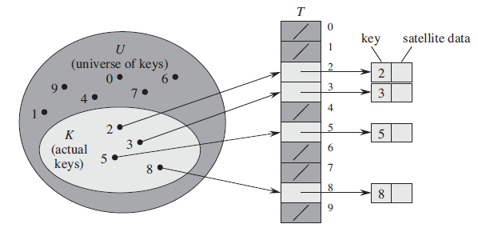
그림 11.1 동적 주소 테이블 T를 이용해 동적 집합을 구현하는 법. 전체 집합 U = {0,1,...,9}에 있는 키는 테이블에 있는 색인에 대응한다. 실제 키의 집합 K = {2,3,5,8}은 테이블에서 요소의 포인터를 가지는 칸을 결정한다. 진회색 칸은 NIL을 갖는다.
11.2 Hash tables
직접 주소 방식은 전체모임 U가 크고 집합 K가 작으면 메모리 공간이 낭비되는 단점이 있다. 이 단점을 보완한 게 해시 테이블이다. k인 키값을 해시 함수 h에 넣고 나온 값 h(k)를 해시 테이블에 저장한다. 해시 테이블의 크기인 m은 U보다 훨씬 작다.
h : U -> {0, 1, ..., m-1} |
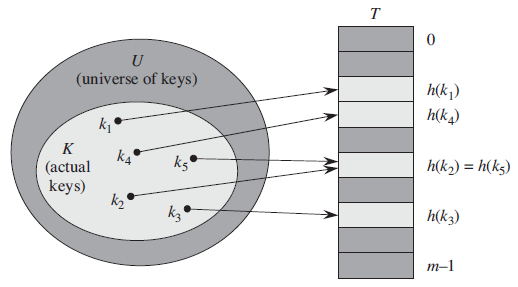
그림 11.2 해시 테이블 칸에 키를 연결시키는 해시 함수 사용하기. 키 k2와 k5가 같은 칸에 연결되기 때문에, 두 키가 충돌한다.
문제는 두 개의 키값이 같은 슬롯으로 해시할 수 있다는 것이다. 이것을 충돌(collision)이라고 부른다. 이상적인 해결방법은 충돌을 완전히 피하는 것이다. 한 가지 방법은 해시 함수를 랜덤하게 나타내는 것이다. 해석하면 "특정 k값을 매번 랜덤하게 생성된 해시 함수에 넣으면 그 결과값은 매번 다르다"라는 뜻이다. (당연히 생성된 해시함수 h는 입력 k에 대해 매번 동일한 h(k)값을 만든다) 그러나 |U| > m 일 경우에 최소한 두 개 이상의 키가 같은 해시값을 갖게 되므로 충돌을 완전히 피하는 것은 불가능하다.
Collision resolution by chaining
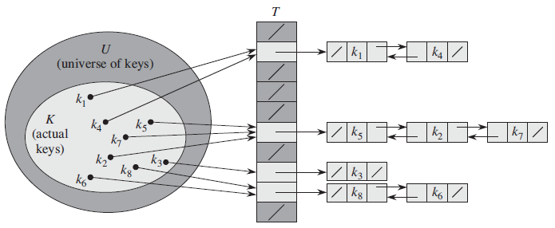
그림 11.3 연쇄를 사용한 충돌 해결. 해시 테이블 칸 T[j]는 해시값이 j인 모든 키의 연결 리스트를 갖는다. 예를 들어, h(k1) = h(k4) 와 h(k5) = h(k7) = h(k2). 연결 리스트는 단일 또는 이중 연결리스트를 사용한다: 이중 연결리스트가 삭제가 빠르기 때문에, 이중 연결리스트를 사용한다.
연쇄(連鎖)(chaining)는 충돌 해결 방법으로 칸은 연결리스트의 머리를 가진다. 같은 칸으로 들어올 경우 연결리스트에 k값을 추가한다.
CHAINED-HASH-INSERT(T,x)
insert x at the head of list T[h(x.key)]
CHAINED-HASH-SEARCH(T,k)
search for an element with key k in list T[h(k)]
CHAINED-HASH-DELETE(T,x)
delete x from the list T[h(x.key)]
최악 삽입시간 : O(1)
최악 탐색시간 : 리스트 길이에 비례한다
최악 삭제시간 : O(1) (이중 연결리스트 사용시)
Analysis of hashing with chaining
적재 인수(load factor)는 사슬(chain)에 저장된 요소들의 평균을 말한다. n개 요소를 가진 m개 슬롯을 포함한 해시테이블 T에 대해, 부하율은 n/m이며 α로 표시된다. α는 1보다 크거나 같거나 작을 수 있다.
- 최악인 경우 Θ(n)
모든 키가 같은 슬롯으로 해시해서 n길이의 리스트를 만든다.
- 평균인 경우 Θ(1+α)
먼저 어떤 요소가 슬롯 m개에 동등하게 해시한다고 가정해야한다. 이것을 단순 균일한 해싱(simple uniform hashing)이라고 한다. 그리고 해시값 h(k)를 계산하는데 걸리는 시간은 O(1) 이다.
(11.1) j = 0,1,...,m-1 에 대하여, T[j] 리스트의 길이를 nj로 정의하자. 그러면 n = n0 + n1 + … + nm-1 이고, nj의 기대값은 E[nj] = α= n/m 이다.
정리 11.1 연쇄를 사용하는 해시테이블에서, 탐색 실패의 평균 시간은 Θ(1+α) 이다. (단순 균일한 해싱 가정 하에) 증명 탐색을 실패하는데 걸리는 예상 시간은 T[h(k)] 리스트 끝에 도달하는데 걸리는 시간이다. 이것은 E[nh(k)] = α 이다. 따라서 h(k)를 계산한 시간을 포함한 총 시간은 Θ(1+α) 이다. |
정리 11.2 연쇄를 사용하는 해시테이블에서, 탐색 성공의 평균적 시간은 Θ(1+α) 이다. (단순 균일한 해싱 가정 하에) 증명 n개 키를 고르는 확률 : 1/n 해시값 계산 : O(1) Xij : h(ki)와 h(kj)가 같을 확률 1/m 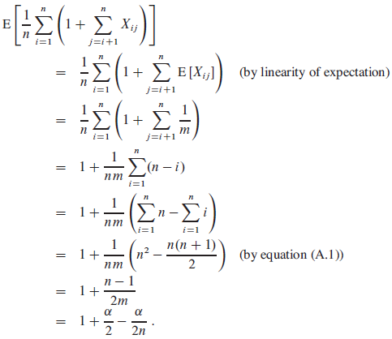 따라서, 탐색 성공에 걸리는 총 시간은 Θ(2 + α/2 - α/2n) =Θ(1+α) 이다. |
11.3 Hash functions
What makes a good hash function?
좋은 해시 함수는 단순 균일한 해싱을 만족한다.
Interpreting keys as natural numbers
대부분의 해시 함수는 키의 전체 집합을 자연수로 가정한다. 만약 키의 집합이 자연수가 아니라면 자연수로 바꿔줘야 한다. (예: ASCII코드 128개를 진법(radix-notation)으로 변환해 사용하기)
11.3.1 The division method
h(k) = k mod m |
나눗셈(division method)을 사용할 경우, 특정 m값은 피해야 한다.
예) m = 2p 일 경우, h(k)는 가장 낮은 순서의 p비트를 가진다.
11.3.2 The multiplication method
h(k) = ⌊m(kA mod 1)⌋ |
A = s / 2w. (0 < A < 1 이고 0 < s < 2w이다.)
A값은 어떤 값이든 상관없으나 knuth가 제안한 다음 값이 가장 좋다.
(11.2) A ≈ (√5 - 1) / 2 = 0.6180339887
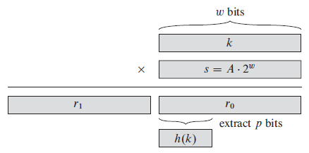
그림11.4 해싱의 곱셈. k키의 w-비트 표현값에 w-비트값 s = A·2w을 곱한다. 이 결과로 나온 곱의 w-비트 반에서 추출된 최우선 비트 p는 바람직한 해시값 h(k)를 만든다.
★ 11.3.3 Universal hashing
전체 해싱(universal hashing)은 여러 해시함수 중 하나를 무작위로 선택하는 것이다.
전체 집합 U에 존재하는 키의 범위를 {0,1,...,m-1}로 지정하는 해시 함수들의 모음(collection)을 H라 하자. 키 쌍 k,l ∈ U에 대해, h(k) = h(l) 이면서 h ∈ H 인 해시 함수의 개수가 최대 |H|/m 이면, 이 모음은 전체 모음이다.
정리 11.3 해시함수 h가 해시함수의 전체 모음으로부터 선택되며, 크기 m인 테이블 T로 n개의 키를 해시하는데 사용되었다고 가정하자. 충돌 해결 방법으로 연쇄를 사용한다. 만약 키 k가 테이블에 없다면 k에 해시하는 리스트의 예상 길이 E[nh(k)]는 최대 α = n / m (적재인수) 이다. 만약 키 k가 테이블에 있다면 k를 갖고 있는 리스트의 예상 길이 E[nh(k)]는 최대 1+α 이다. 증명 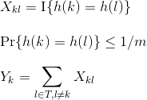 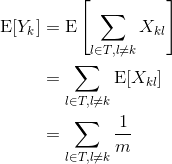
|
따름정리 11.4
O(m) 삽입을 포함하여 n개의 삽입, 탐색, 삭제 연산을 할 때, m개 공간을 가진 빈 테이블에서 전체 해싱과 연쇄를 사용하는 것은 Θ(n)이 걸린다.
Designing a universal class of hash functions
충분히 큰 소수 p 키 k 범위 0 ≤ k ≤ p-1 p > m
Zp = {0,1,...,p-1}
Zp* = {1,2,...,p-1}
해시함수 hab (a ∈ Zp*, b ∈ Zp)
(11.3) hab(k) = ((ak + b) mod p) mod m
(11.4) Hpm = {hab : a ∈ Zp*, b ∈ Zp}
정리 11.5 (11.3)과 (11.4)에 정의된 해시 함수로 구성된 Hpm은 전체적(universal)이다. 증명 키 k,l ∈ Zp r = (ak+b) mod p s = (al+b) mod p r ≠ s why? r-s ≡ a(k-l) (mod p) // a는 0일 수 없고, k,l은 서로 다르므로 (a,b) => Zp* × Zp a = ((r-s)((k-1)-1 mod p)) mod p b = (r-ak) mod p k,l이 충돌할 확률은 r ≡ s (mod m) 과 같다. ⌈p/m⌉ - 1 ≤ ((p+m-1)/m) - 1 (by inequality (3.6)54p) = (p-1) / m Pr{Hab(k) = hab(l)} ≤ 1/m ∴ Hpm은 전체적이다. |
11.4 Open addressing
개방 주소화(open addressing)는 모든 요소들이 해시 테이블을 차지하는 것을 말한다. 즉, 해시 테이블이 연쇄처럼 리스트를 갖는 것이 아닌 키 또는 NIL을 요소로 갖는다.
장점
리스트의 포인터를 사용하지 않으므로 공간을 더 얻을 수 있다. 공간이 많아지면 충돌이 적게 일어나고 키를 얻는 게 빠르다.
구현
빈 칸이 나올 때까지 탐색하고 찾으면 키값을 넣어주면 된다. 이것을 탐사(probe)라고 한다. 탐색시 0부터 m-1까지 차례로 탐색하지 않고 해시함수에 키와 0~m-1값 중 하나를 넣어 나온 값으로 탐색을 해 나간다.
탐사 순서(probe sequence): <h(k,0),h(k,1), ... , h(k,m-1)>
HASH-INSERT(T,k)
i = 0
repeat
j = h(k,i)
if T[j] == NIL
T[j] = k
return j
else i = i+1
until i == m
error "hash table overflow"
HASH-SEARCH(H,k)
i = 0
repeat
j = h(k,i)
if T[j] == k
return j
i = i+1
until T[j] == NIL or i == n
return NIL
- 균일 해싱(uniform hashing)이라고 가정한다. 각 키는 m! 순열을 만족한다. 현실에서 균일 해싱을 구현하기는 어려우므로 그와 비슷한 이중 해싱을 사용한다.
Linear probing
h(k,i) = (h'(k) + i) mod n (i = 0,1, ... ,m-1)
* h': U -> {0,1,...,m-1}은 보조 해시 함수(auxiliary hash function)이다.
일차 탐사(linear probing)는 구현하기 쉽지만 primary clustering 문제를 가지고 있다. i개 칸이 가득 차 있다면 그 다음 빈 칸은 (i+1) / m 확률로 채워지기 때문이다. 따라서 가득 찬 칸들이 연속해 있고 길이가 길면 길수록 탐색 시간은 느려진다.
Quadratic probing
h(k,i) = (h'(k) + c1i + c2i2) mod m
이차 탐사(quadratic probing)는 일차 탐사보다 효율이 좋지만 c1,c2,m 값을 제한적으로 정해야 한다. 두 개 키의 첫 탐사 위치가 같을 경우 secondary clustering 문제가 생긴다.
* 클러스터링에 대한 쉬운 설명: https://stackoverflow.com/questions/27742285/what-is-primary-and-secondary-clustering-in-hash
Double hashing
h(k,i) = (h1(k) + ih2(k)) mod m
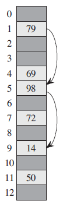
그림 11.5 이중 해싱으로 삽입하기. h1(k) = k mod 13 이고 h2(k) = 1 + (k mod 11) 을 가진 해시 테이블의 크기는 13이다. 먼저 1번 칸과 5번 칸을 조사 후, 차 있다는 것을 알게 된다. 14 ≡ 1 (mod 13) 이고 14 ≡ 3 (mod 11) 이기 때문에, 키 14를 9번 빈 칸에 삽입한다.
h2(k) 값은 해시테이블 크기인 m과 서로소여야 한다. 이러한 조건을 만족하는 한 가지 쉬운 방법은 m을 2의 제곱으로 놓고 h2를 설계하는 것이다. 그러면 h2는 항상 홀수를 만든다. 또 다른 방법은 m을 소수로 놓고 h2를 설계하는 것이다. 그러면 h2는 항상 m보다 작은 양수를 만든다.
Analysis of open-address hashing
** 실패한 탐색이 뜻하는 것은 i번째 탐사까지 빈 칸을 찾지 못했다는 의미이다.
정리 11.6 적재 인수 α = n/m < 1 인 개방 주소화 해시 테이블을 가질 때, 균일 해싱이라는 가정 하에 실패한 탐색에서 탐사의 기대값은 최대 1 / (1-α) 이다. 증명 확률 변수 X를 실패한 탐색의 탐사 횟수라고 하고, 사건 Ai를 (i = 1,2, ...) i번째 탐사가 일어난 사건이라고 하자. 사건 {X ≥ i}는 A1 ∩ A2 ∩ … ∩ Ai-1 사건들의 교집합이다. 연습문제 C.2-5에 의해서 다음 식이 나온다. 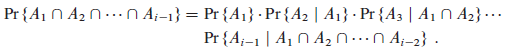 요소 n개와 칸 m개가 있으므로, Pr{A1} = n/m. j > 1에 대해 j번째 탐사가 이미 차 있는 칸을 방문한다면, j-1번째 탐사가 이미 차 있는 칸을 방문했던 것을 고려하여, 확률은 (n-j+1)/(m-j+1) 이다. 조사되지 않은 (m-(j-1)개 칸 중 한 칸에서 현재 남아 있는 (n-(j-1))개 요소 중 하나를 찾을 것이며, 또한 균일 해싱을 가정하므로, (n-j+1)/(m-j+1) 확률은 "Pr{A1 ∩ A2 ∩ … ∩ Ai-1} 확률은 남아있는 수량의 비율이다"라는 결론을 따른다. n < m은 0 ≤ j < m에 대해 (n-j)/(m-j) ≤ n/m 임을 나타내므로, 1 ≤ i ≤ m 일 때 다음 식을 갖는다. 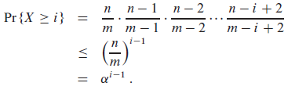 이제 아래의 (C.25)와 (A.6)를 사용하여 탐사 기대값의 경계를 정한다. (C.25) 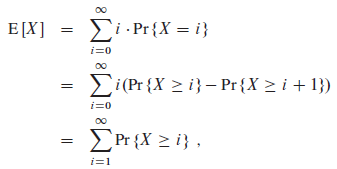 (A.6) 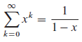 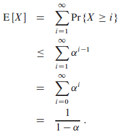 ■ |
따름정리 11.7
적재 인수 α인 개방 주소화 해시 테이블에 요소를 삽입하는 것은 균일 해싱이라는 가정 하에 평균적으로 최대 1/(1-α) 탐사가 필요하다.
증명 테이블에 공간이 있을 때만 요소를 삽입할 수 있다. 즉, α < 1 이다. 키를 삽입한다는 것은 첫 번째 빈 칸에 키를 삽입하기 전에 실패한 탐색이 있다는 뜻이다. 따라서 탐사의 기대값은 최대 1/(1-α) 이다.
■
정리 11.8 적재 인수 α < 1인 개방 주소화 해시 테이블을 가질 때, 성공한 탐색에서 탐사의 기대값은 (균일 해싱과 각 키의 동등한 탐색 가정 하에) 최대 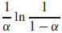 값을 가진다.증명 키 k에 대한 탐색은 키 k를 가진 요소가 이전에 삽입됐을 때처럼 동일한 탐사 수열을 만든다. k가 해시 테이블에 삽입되는 (i+1)번째 키라면, k에 대한 탐색에서 탐사의 기대값은 최대 1/(1-i/m) = m/(m-i) 이다. 성공한 탐색에서 탐사의 기대값은 모든 n개 키에 관한 평균이다: 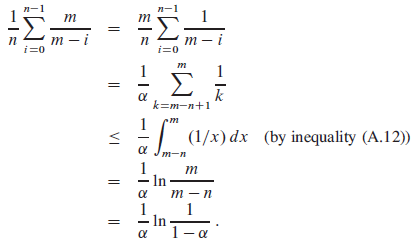 (A.12) 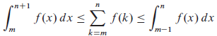 ■ |
해시 테이블의 반이 차 있으면, 성공한 탐색에서 탐사의 기대값은 1.387보다 작다. 해시 테이블의 90 퍼센트가 차 있으면, 탐사의 기대값은 2.559보다 작다.
★ 11.5 Perfect hashing
해싱은 평균적인 경우에 있어서 좋은 성능을 내지만, 키 집합이 정적(static)인 상황에서 최악인 경우에서도 좋은 성능을 제공한다. 완전 해싱(perfect hashing)은 최악인 경우에서 탐색의 메모리 접근 시간이 O(1) 시간이 필요할 때 사용한다.
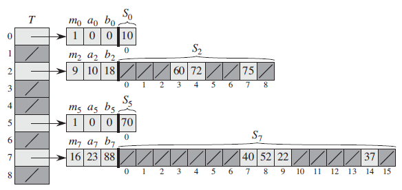
그림 11.6 집합 K = {10,22,37,40,52,60,70,72,75}를 저장하기 위해 완전 해싱을 사용 하는 것. 외부 해시 함수는 h(k) = ((ak+b) mod p) mod m 이다. a = 3, b = 42, p = 101, m = 9. 예를 들어, h(75) = 2 이고 따라서 키 75는 테이블 T의 2번 칸으로 해시한다. T의 j번 칸에 해시하는 모든 키를 두 번째 해시 테이블 Sj에 저장한다. Sj의 크기는 mj = nj2 이고, 연관된 해시 함수는 hj(k) = ((ajk+bj) mod p) mod mj 이다. h2(75) = 7 이므로, 키 75는 두 번째 해시 테이블 S2의 7번 칸에 저장된다. 두 번째 해시 테이블 중 어느 곳에서도 충돌이 일어나지 않고, 따라서 최악인 경우에 탐색은 상수 시간이 걸린다.
연쇄(chaining)에서 칸은 리스트를 가지고 있으나 완전 해싱에서 칸은 해시 함수 hj를 가진 두번째 해시테이블 Sj를 갖는다. Sj의 크기인 mj는 j칸으로 해싱하는 키들의 개수 nj의 제곱이다. 전체 크기는 O(n)을 만족한다. 해시 함수는 클래스 Hp,m_{j}에서 선택된다. p는 키값보다 큰 소수이다. 키가 한 개만 있을 때(nj = mj = 1), 해시 함수를 쓸 필요는 없으므로 a = b = 0 으로 둔다.
정리 11.9와 11.10은 두 번째 해시 테이블 크기에 관한 증명이다.
정리 11.9 해시 함수의 전체 클래스에서 무작위로 선택된 해시 함수 h를 이용하여 m = n2 크기의 해시테이블에 n개의 키를 저장한다고 가정하자. 그러면 충돌이 생길 확률은 1/2보다 작다. 증명 충돌할 수 있는 키의 쌍은 nC2개이다; h가 해시 함수로 이루어진 전체 클래스에서 선택된다면, 전체 각 쌍은 1/m 확률로 충돌한다. X를 충돌 횟수를 세는 확률 변수라고 하자. m = n2일 때, 충돌의 기대값은 다음과 같다. 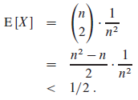 (이 분석은 5.4.1절에 있는 생일 역설의 분석과 유사하다.) (C.30) 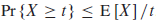 마르코프 부등식(Markov's inequality) (C.30)을 적용하면, Pr{X ≥ t} ≤ E[X]/t (t = 1) 이고, 증명이 완성된다. ■ |
해시되야하는 n개 키를 가진 정적인 집합 K를 고려한다면, 몇 번의 임의 시도만으로 충돌에서 자유로운 해시 함수를 찾는 것은 쉽다. 그러나 n이 크다면, 크기가 m = n2인 해시 테이블은 거대해진다. 따라서 키를 m = n 칸으로 해시하는 외부 또는 첫 번째 해시 함수 h를 사용한다. 그 후, nj개 키들이 j칸으로 해시한다면 두 번째 해시 테이블 Sj를 사용한다.
정리 11.10 해시 함수의 일반적인 클래스에서 무작위로 선택된 해시 함수 h를 이용하여 m = n 크기의 해시테이블에 n개의 키를 저장한다고 가정하자. 그러면 다음과 같은 식을 갖는다. 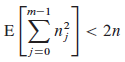 여기서 nj는 j칸으로 해싱하는 키들의 개수이다. 증명 다음 식은 뒤에 있을 증명에서 사용된다. a는 0을 포함한 양수이다. (11.6) 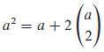 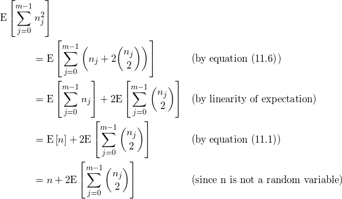 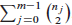 항은 해시 테이블에서 충돌할 수 있는 키 쌍의 총 개수이다. 전체 해싱의 속성을 이용하여 n_{j}C2를 계산한다.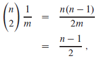 (m = n) 아래 식으로 증명은 마무리 된다. 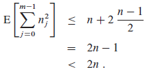 ■ |
따름정리 11.11
해시 함수를 가진 전체 클래스에서 무작위로 선택된 해시 함수 h를 이용하여 m = n 크기의 해시테이블에 n개의 키를 저장한다고 가정하자. 그리고 두번째 해시 테이블 각각의 크기를 mj = nj2 (j = 0,1,...,m-1) 이라고 하자. 그러면 완전 해싱에서 모든 두번째 해시 테이블에 필요한 저장 공간의 기대량은 2n보다 작다.
증명 mj = nj2이기 때문에, 정리 11.10로부터 다음 식이 나온다.
(11.7)
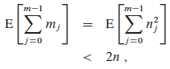
■
따름정리 11.12
해시 함수를 가진 전체 클래스에서 무작위로 선택된 해시 함수 h를 이용하여 m = n 크기의 해시테이블에 n개의 키를 저장한다고 가정하자. 그리고 두번째 해시 테이블 각각의 크기를 mj = nj2 (j = 0,1,...,m-1) 이라고 하자. 그러면 두번째 해시 테이블에 사용되는 총 공간이 4n과 같거나 클 확률은 1/2보다 작다.
증명 부등식 (11.7)에 마르코프 부등식 (C.30)을 적용하면, Pr{X ≥ t} ≤ E[X]/t (X =
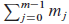
, t = 4n) 다음 식이 나온다.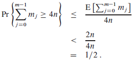
■